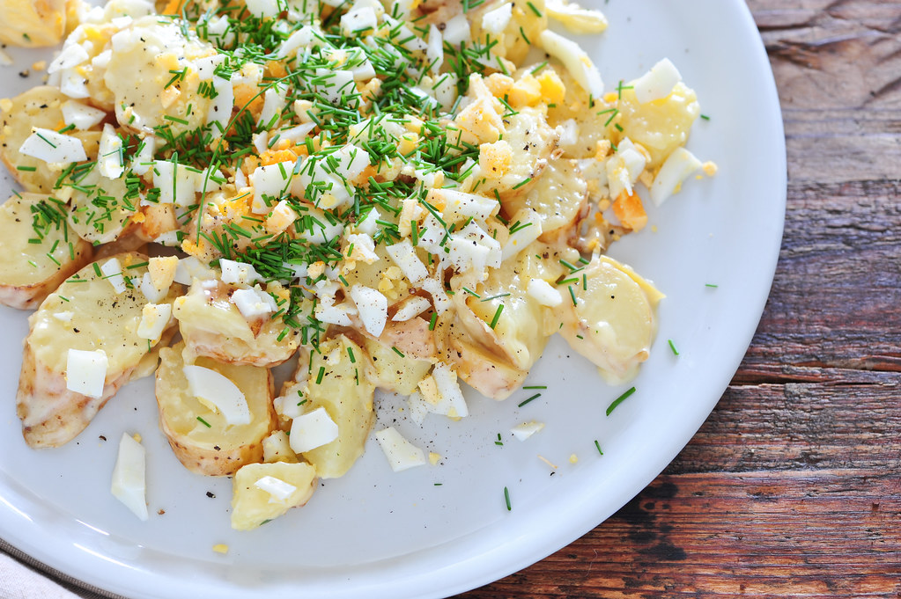

World's Best Potato Salad

This best-ever potato salad is the creamiest, richest potato salad you will ever try. The secret is in the homemade dressing. I get nothing but raves every time I make this.
Ingredients
- 6 medium potatoes
- 1/2 cup white sugar
- 2 large eggs, beaten
- 1 teaspoon cornstarch
- salt to taste
- 1/2 cup vinegar
- 1 teaspoon prepared yellow mustard
- 1/4 cup butter
- 1 cup mayonaise
- 6 large hard-cooked eggs,diced
- 1 small onion, finely chopped
- 1 cup celery, chopped
- 1 teaspoon salt
Directions
- Place potatoes in a large pot and cover with salted water; bring to a boil. Reduce heat to medium-low and simmer until tender, about 20 minutes. Drain and set aside to cool.
- While the potatoes are cooking, whisk together sugar, 2 beaten eggs, and cornstarch in a saucepan; season with salt.
- Stir in milk, vinegar, and mustard. Cook and stir over medium heat until thickened, about 10 minutes. Remove from heat and stir in butter. Refrigerate until cool, then stir in mayonnaise.
- Peel and dice potatoes. Transfer to a large bowl; toss with hard-cooked eggs, onion, celery, and 1 teaspoon salt.
- Stir dressing gently into the bowl of potato salad until evenly coated.
- Chill before serving, 3 hours to overnight